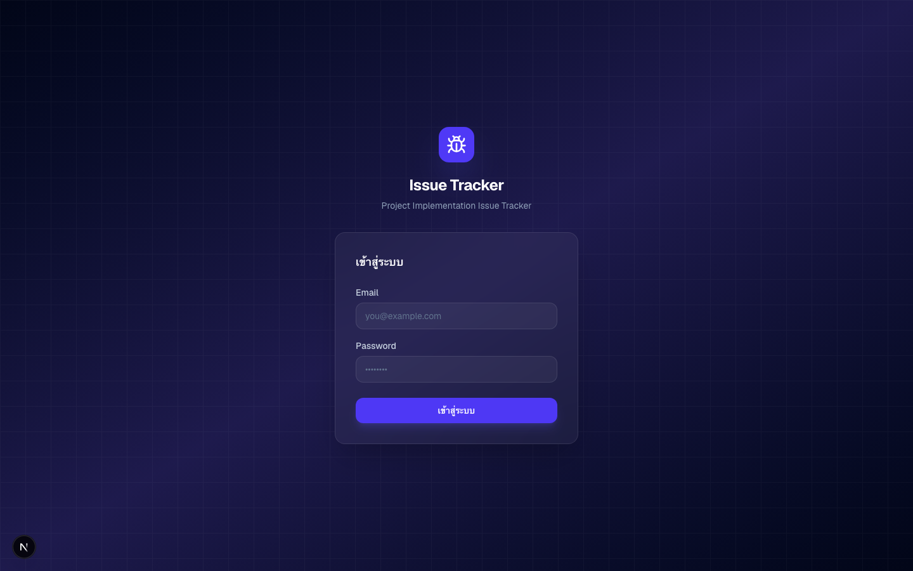
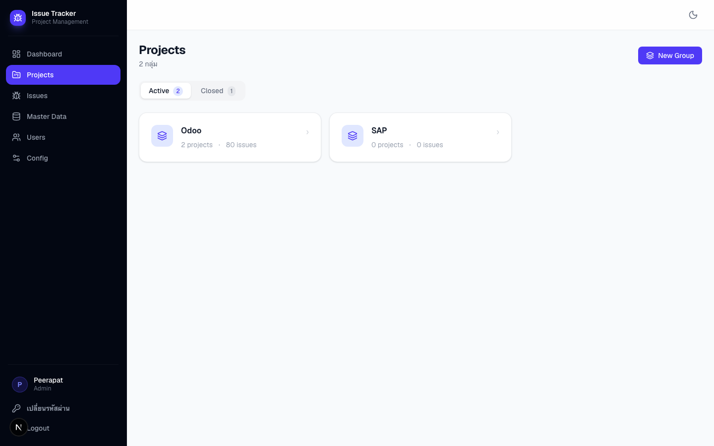
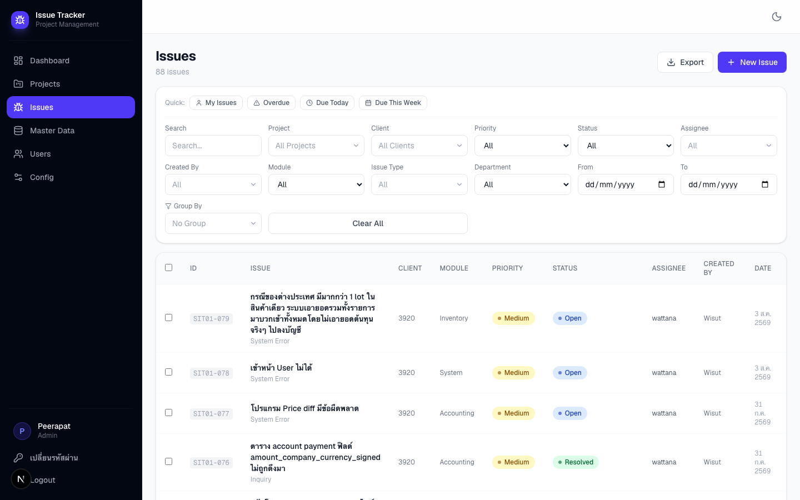
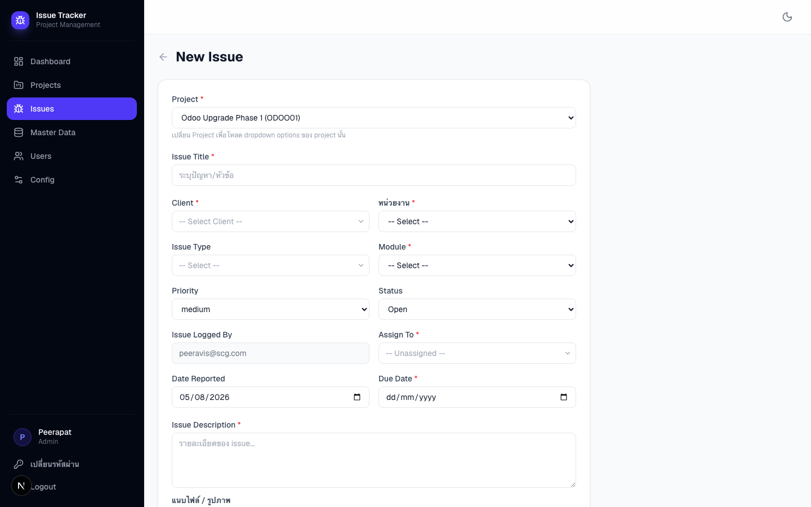

🐞
Issues & Projects
คู่มือการใช้งาน — Issue Tracker SCG
📁 Projects — หน้าแรกที่ Member เห็น
📋 Issues — บันทึกและติดตามปัญหา
URL: odoo-issue-log.scg.com
ขั้นตอนการใช้งาน Member
Flow การใช้งาน
Member login แล้วจะเจอหน้า Projects ก่อนเสมอ
🔐
Login
กรอก Email & Password
→
📁
Projects
หน้าแรก — เลือก Project
→
📋
Issues
รายการ Issue ของ Project
→
🔍
รายละเอียด
ดู / แก้ไข / Comment
→
✅
ปิด Issue
เปลี่ยน Status → Closed
1ขั้นตอนแรก
การเข้าสู่ระบบ
เปิด Browser ไปที่ URL ระบบ กรอก Email และ Password
- กรอก Email ที่ได้รับจากผู้ดูแลระบบ
- รหัสผ่านครั้งแรก:
Scg@1234 - กด เข้าสู่ระบบ → redirect ไป หน้า Projects อัตโนมัติ
- เปลี่ยน Password ทันที หลัง login ครั้งแรก ที่เมนู โปรไฟล์ มุมล่างซ้าย
- Session หมดอายุ → แจ้งเตือนให้ login ใหม่

2หน้าแรกหลัง Login
เลือก Project
Member จะเจอหน้า Projects ก่อนเสมอ — เลือก Project ที่ต้องการทำงาน
- แสดงเฉพาะ Project ที่ตนเองเป็น สมาชิก
- จัดกลุ่มตาม Project Group (Odoo, SAP ฯลฯ)
- ดูจำนวน Issue และ สมาชิก ของแต่ละ Project
- คลิกชื่อ Project → เข้าดู Issues ของ Project นั้น
- กรองดู Active หรือ Closed Projects

3หลังเลือก Project
รายการ Issues
ระบบแสดง Issues ของ Project ที่เลือก — กรองและค้นหาเพิ่มเติมได้
- เห็นเฉพาะ Issue ของ Project นั้น
- Filter เพิ่มได้: Status, Priority, Assignee, Module
- Filter ตามวันที่สร้าง และ Due Date
- ค้นหาด้วย Keyword
- กด + สร้าง Issue เพื่อสร้างใหม่
- คลิกที่ Issue → เข้าดูรายละเอียด

4สร้าง Issue ใหม่
กรอกข้อมูล Issue
คลิก + สร้าง Issue แล้วกรอกรายละเอียดให้ครบ
- Project ถูกเลือกอัตโนมัติจาก Project ที่เข้ามา
- ระบุ Client, Department, ประเภทปัญหา, Module
- กำหนด Priority และ Assignee
- กรอกรายละเอียดปัญหา รองรับ Markdown
- แนบไฟล์ได้: PDF, รูปภาพ, Excel, Word, ZIP (สูงสุด 5 MB)
- กด บันทึก → ระบบพาไปหน้ารายละเอียด

5ติดตาม Issue
รายละเอียด Issue
คลิก Issue ใดก็ได้จากรายการเพื่อดูรายละเอียดและอัปเดต
- ดูข้อมูลครบ: Status, Priority, Assignee, วันที่
- กด Edit เพื่อแก้ไข Fields
- เปลี่ยน Status ผ่าน Dropdown ตาม Workflow
- เพิ่ม Comment แจ้งความคืบหน้า
- อัปโหลด / ดาวน์โหลด Attachment
- เมื่อปิด Issue ระบบแสดง Solution Fields

สรุป
ขั้นตอนการใช้งานสำหรับ Member
จำ 5 ขั้นตอนนี้ก็พอ
① Login
ไปที่
Password ครั้งแรก:
odoo-issue-log.scg.comPassword ครั้งแรก:
Scg@1234② เลือก Project
หน้าแรกจะเป็น Projects
คลิกชื่อ Project ที่ต้องการ
คลิกชื่อ Project ที่ต้องการ
③ ดู Issues
เห็น Issue ของ Project
กรองด้วย Filter / Search
กรองด้วย Filter / Search
④ สร้าง Issue ใหม่
กด + สร้าง Issue
กรอกข้อมูลแล้วบันทึก
กรอกข้อมูลแล้วบันทึก
⑤ อัปเดต Issue
คลิก Issue → แก้ไข Status
เพิ่ม Comment / Attachment
เพิ่ม Comment / Attachment
⑥ Export
กด Filter → Export CSV
ดาวน์โหลดรายการทั้งหมด
ดาวน์โหลดรายการทั้งหมด